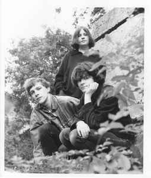

Краткая информация
Популярная группа из 80-х, образовавшаяся в Глазго, Шотландии. Играла ключевую роль в рамках британской независимой музыкальной сцены.
Участники группы
Стивен МакРоби, Катрина Митчел, Том Кросли, Джон Хогарти, Элисон Митчел, Сюз Бир
Биография
Группа образовалась в Глазго, Шотландия, в 1981 году. К 1983 году стала "the next big thing" в Шотландии, выпустив свой первый сингл на мэйджор-лэйбле Rough Trade. В 1986 году группа участвовала в знаковой компиляции журнала NME "с-86". Их дебютный альбом Up for a Bit with the Pastels 1987 года был отмечен такими музыкантами как Sonic Youth, Куртом Кобейном, Jesus and Mary Chain. Группа существует по сей день, занимаясь своим собственным лэблом Geographic Music.
Дискография
- Up for a Bit with The Pastels (1987)
- Sittin' Pretty (1989)
- Mobile Safari (1995)
- llumination (1997)
- Slow Summits (2013)